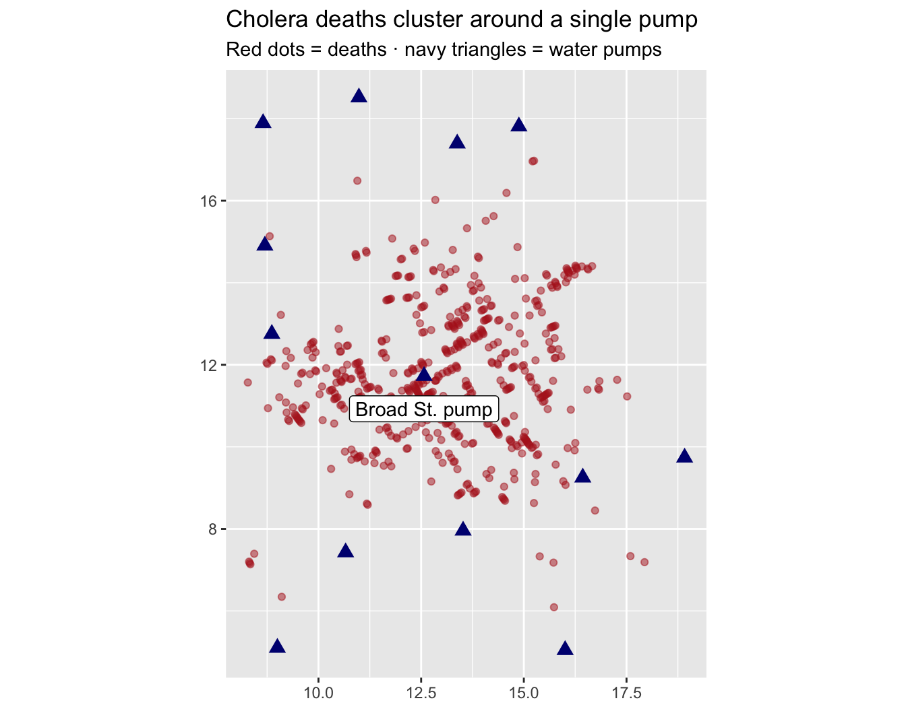
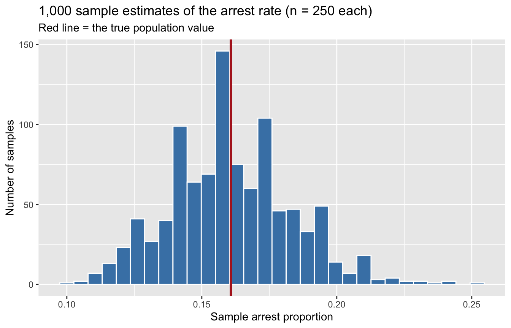
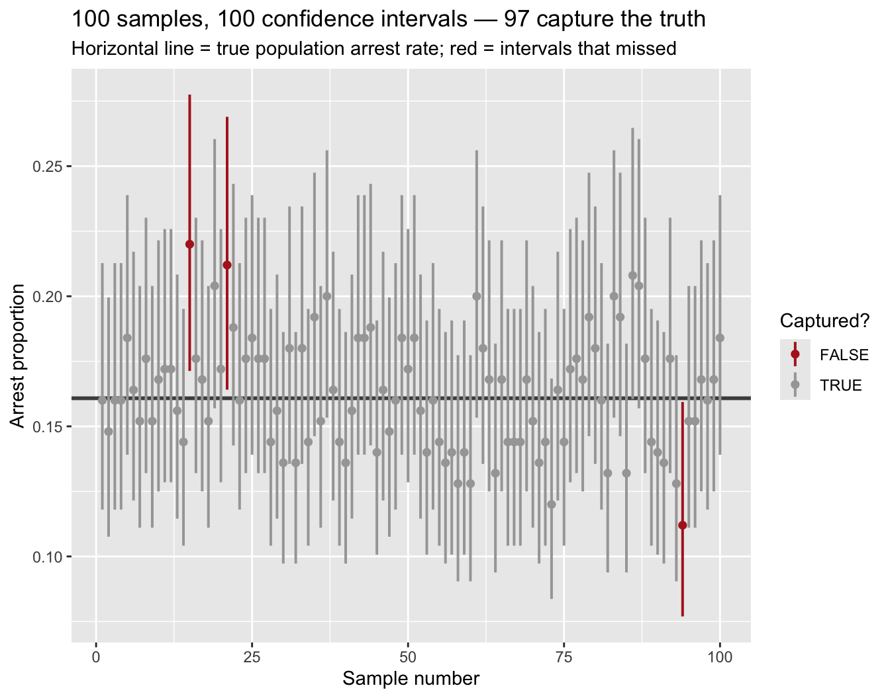
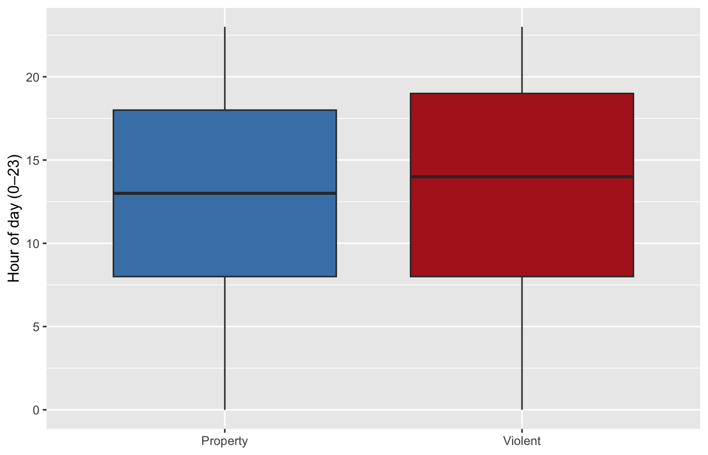

Demo Walkthrough · Session 5
Confidence intervals — turning one sample into an honest range
What this page is. The Session 5 lecture demos, written down step by step. Every chunk below is self-contained — copy any of them into your own R session and they run as-is. Use this page to catch up after a missed class, or to re-run what happened on screen at your own pace.
What you’ll build
- John Snow’s 1854 cholera inference, recomputed from his original data — the classic example of reasoning from a sample to the world
- A demonstration that point estimates fluctuate: 1,000 samples from a population whose truth we secretly know
- A 95% confidence interval from
prop.test(), and the 100-intervals plot — the picture that shows what “95% confident” actually means - Sentences you can and cannot say when reporting an interval
- How sample size buys precision, and a CI for a two-group difference with
t.test()
Setup
Two packages today: the tidyverse, plus HistData, which ships John Snow’s original cholera data (Snow.deaths and Snow.pumps):
1 · Inference, in 1854
Cholera breaks out in Soho, London. The debate: bad air (“miasma”) or contaminated water? John Snow couldn’t test every household in London — that’s the whole population. So he mapped the sample of evidence he could get: deaths, and where people drew their water.
We can rerun his reasoning. For each of the 578 recorded deaths, find the nearest pump. Two verbs arrive ahead of schedule here — crossing() builds every death–pump pair, and left_join() looks up each point’s coordinates. Joins get their full treatment in next week’s lab; today, read them as “pair up, then look up” and focus on the logic:
deaths <- as_tibble(Snow.deaths)
pumps <- as_tibble(Snow.pumps)
pairs <- crossing(case = deaths$case, pump = pumps$pump) |>
left_join(deaths |> select(case, dx = x, dy = y), by = "case") |>
left_join(pumps |> select(pump, label, px = x, py = y), by = "pump") |>
mutate(dist = sqrt((dx - px)^2 + (dy - py)^2))
nearest <- pairs |>
slice_min(dist, n = 1, by = case)
nearest |>
count(label, name = "deaths_nearest") |>
arrange(desc(deaths_nearest))# A tibble: 12 × 2
label deaths_nearest
<chr> <int>
1 Broad St 359
2 So Soho 64
3 Crown Chapel 61
4 Briddle St 27
5 Oxford St #2 24
6 Warwick 16
7 Oxford St #1 12
8 Gt Marlborough 6
9 Vigo St 4
10 Coventry St 2
11 Dean St 2
12 Castle St E 1One pump — Broad St — is the nearest pump for 359 of the 578 deaths. Seen on the map:
broad <- pumps |> filter(label == "Broad St")
ggplot() +
geom_point(data = deaths, aes(x, y), color = "firebrick", alpha = 0.5, size = 1.5) +
geom_point(data = pumps, aes(x, y), color = "navy", size = 3, shape = 17) +
annotate("label", x = broad$x, y = broad$y - 0.8, label = "Broad St. pump") +
coord_equal() +
labs(title = "Cholera deaths cluster around a single pump",
subtitle = "Red dots = deaths · navy triangles = water pumps",
x = NULL, y = NULL)
Snow wasn’t just describing this map — he was making a bigger claim about the whole city, and about cholera itself. That jump — from the data you have to the world you don’t — is what we mean by inference. And the fine print from lecture: you cannot PROVE anything from samples. We collect data and analyze it to build up a weight of evidence that shifts our certainty toward one conclusion or another.
2 · A rare luxury: we know the truth
Our Chicago file holds ~30,000 incidents from 2025. Today, pretend the file is the whole population — then we can check every inference against the truth:
# A tibble: 1 × 2
pop_arrest_rate n
<dbl> <int>
1 0.161 30000The “true” citywide arrest proportion is 16.1%. Lock that in — in real research you never get to see this number.
Now act like a researcher who can only afford to pull 250 case files:
sample_250 <- crimes |> slice_sample(n = 250)
sample_250 |> summarize(sample_arrest_rate = mean(arrest))# A tibble: 1 × 1
sample_arrest_rate
<dbl>
1 0.148This is a point estimate — the sample’s best single guess at the population value. About 14.8% versus the true 16.1%. Close-ish. But how good is this estimate? How certain are we?
3 · Caution! Samples fluctuate
Draw a fresh sample of 250 and the estimate moves. Do it 1,000 times:
many_estimates <- map_dbl(1:1000, \(i) {
crimes |> slice_sample(n = 250) |> summarize(p = mean(arrest)) |> pull(p)
})
ggplot(tibble(p = many_estimates), aes(p)) +
geom_histogram(bins = 30, fill = "steelblue", color = "white") +
geom_vline(xintercept = mean(crimes$arrest), color = "firebrick", linewidth = 1.2) +
labs(title = "1,000 sample estimates of the arrest rate (n = 250 each)",
subtitle = "Red line = the true population value",
x = "Sample arrest proportion", y = "Number of samples")
That’s Session 4’s sampling distribution, live. Where did the middle 95% of estimates land?
Roughly 12% to 21% — any single sample’s estimate could easily be a couple points off the truth. So reporting “14.8%” alone is overconfident; we owe our reader a range that reflects the fluctuation. Problem: this exercise required 1,000 samples and a known population. A real researcher has one sample. Now what?
4 · The confidence interval
The confidence interval turns one sample into an honest range, using what Session 4 taught us about how sample statistics behave:
\[\text{estimate} \; \pm \; \underbrace{1.96 \times SE}_{\text{margin of error}}\]
The SE (standard error) is the standard deviation of the sampling distribution, estimated from the one sample you have; 1.96 comes from the normal distribution — ±1.96 SDs covers the middle 95%. R does the whole thing for us:
1-sample proportions test with continuity correction
data: sum(sample_250$arrest) out of 250, null probability 0.5
X-squared = 122.5, df = 1, p-value < 2.2e-16
alternative hypothesis: true p is not equal to 0.5
95 percent confidence interval:
0.1075899 0.1995409
sample estimates:
p
0.148 Our one sample of 250 says: point estimate 14.8%, 95% CI 10.8% to 20.0%. The true value (16.1%) is inside — this time. But “95% confident” of what, exactly?
5 · The classic picture: 100 samples, 100 intervals
Draw 100 samples; build a 95% CI from each. (map() runs the procedure 100 times and list_rbind() stacks the 100 one-row results into one tibble — Session 3’s replicate(), tibble-flavored; see the simulation verbs reference.)
ci_100 <- map(1:100, \(i) {
s <- crimes |> slice_sample(n = 250)
ci <- prop.test(sum(s$arrest), n = 250)$conf.int
tibble(sample = i, estimate = mean(s$arrest), lo = ci[1], hi = ci[2])
}) |>
list_rbind() |>
mutate(captured = lo <= mean(crimes$arrest) & mean(crimes$arrest) <= hi)
sum(ci_100$captured) # how many of the 100 intervals caught the truth?[1] 97ggplot(ci_100, aes(sample, estimate, color = captured)) +
geom_hline(yintercept = mean(crimes$arrest), color = "grey30", linewidth = 1) +
geom_pointrange(aes(ymin = lo, ymax = hi), linewidth = 0.7, size = 0.25) +
scale_color_manual(values = c("TRUE" = "grey65", "FALSE" = "firebrick")) +
labs(title = paste0("100 samples, 100 confidence intervals — ",
sum(ci_100$captured), " capture the truth"),
subtitle = "Horizontal line = true population arrest rate; red = intervals that missed",
x = "Sample number", y = "Arrest proportion", color = "Captured?")
In plain language: each vertical bar is one research team’s interval, the truth never moves, and about 95 of 100 intervals catch it. Each sample produced a different interval — the interval is a random quantity; the population value is fixed. In our run, 97 of 100 captured the truth. The teams who drew the red samples did nothing wrong — and their data give no warning that theirs are the unlucky intervals.
That long-run capture rate is the entire meaning of “95% confident”: if we reran the whole study many times, in 95% of those replications the interval would contain the true value. Three things follow:
- Our 95% CI does not necessarily contain the true population value
- Our 95% CI is not a statement about the probability that this particular interval is correct
- It is a long-run prediction based on numerous replications
(Everyone reacts to this with some version of “WTF?!?” — stare at the plot until it clicks.)
6 · Saying it out loud
Defensible sentences:
“We estimate the citywide arrest rate at 14.8% (95% CI: 10.8% to 20.0%). Values in this range are consistent with our data.”
“The method we used captures the true value 95% of the time.”
Not defensible:
“There is a 95% probability the true arrest rate is between 10.8% and 20.0%.” — the truth is fixed; it’s either in there or it isn’t.
“95% of arrest rates fall in this interval.” — the CI is about the population parameter, not individual observations.
The forbidden first sentence is forbidden only under frequentist rules, where probability attaches to the procedure, never to the parameter. Attaching probability to a claim itself is exactly what Session 3’s Bayes’ theorem does — and next session we compute an interval you can say that sentence about: the credible interval. If the forbidden sentence felt like the natural reading all along, your intuitions were Bayesian. You’re in good company.
7 · Sample size buys precision
Same procedure, four sample sizes, one draw each:
map(c(100, 250, 1000, 4000), \(n) {
s <- crimes |> slice_sample(n = n)
ci <- prop.test(sum(s$arrest), n = n)$conf.int
tibble(n = n, estimate = mean(s$arrest),
lo = ci[1], hi = ci[2], width = ci[2] - ci[1])
}) |>
list_rbind()# A tibble: 4 × 5
n estimate lo hi width
<dbl> <dbl> <dbl> <dbl> <dbl>
1 100 0.22 0.146 0.316 0.170
2 250 0.192 0.146 0.247 0.101
3 1000 0.154 0.132 0.178 0.0457
4 4000 0.163 0.152 0.175 0.0231Quadrupling n roughly halves the width — precision grows with \(\sqrt{n}\), so it gets expensive fast.
8 · Comparing two groups: do violent crimes happen later in the day?
Street lore says violence is a nighttime phenomenon; property crime, the daytime hustle. Our data:
# A tibble: 2 × 4
crime_category mean_hour sd_hour n
<chr> <dbl> <dbl> <int>
1 Violent 12.8 6.87 9148
2 Property 12.5 6.63 10371Two point estimates: violent crimes average hour 12.8, property 12.5. Is that ~15-minute gap real, or sample fluctuation?
ggplot(vp, aes(crime_category, hour, fill = crime_category)) +
geom_boxplot(show.legend = FALSE) +
scale_fill_manual(values = c("steelblue", "firebrick")) +
labs(x = NULL, y = "Hour of day (0–23)")
The boxes nearly coincide — the eye can’t settle this one. So resample: pull a bootstrap sample from each group, compute the difference in means, repeat 1,000 times:
violent_hours <- vp$hour[vp$crime_category == "Violent"]
property_hours <- vp$hour[vp$crime_category == "Property"]
mean_diffs <- replicate(1000, {
mean(sample(violent_hours, length(violent_hours), replace = TRUE)) -
mean(sample(property_hours, length(property_hours), replace = TRUE))
})
quantile(mean_diffs, c(0.025, 0.975)) 2.5% 97.5%
0.05568685 0.43652029 The middle 95% of resampled differences (Violent − Property) runs from about 0.06 to 0.44 hours — all above zero. The two-sample t-test gives the CI directly, no loop required:
t.test(hour ~ crime_category, data = vp)
Welch Two Sample t-test
data: hour by crime_category
t = -2.6061, df = 19021, p-value = 0.009164
alternative hypothesis: true difference in means between group Property and group Violent is not equal to 0
95 percent confidence interval:
-0.44272107 -0.06263688
sample estimates:
mean in group Property mean in group Violent
12.54334 12.79602 Watch the direction: R orders groups alphabetically, so this tests Property − Violent — the mirror image of our resampled differences. Same finding, flipped sign:
t.test(hour ~ crime_category, data = vp)$conf.int[1] -0.44272107 -0.06263688
attr(,"conf.level")
[1] 0.95Reading it honestly: the 95% CI for the difference runs from −0.44 to −0.06 hours — it excludes zero, so the data are consistent with violent crimes genuinely averaging later. But look at the magnitude: somewhere between about 4 and 27 minutes. Detectable ≠ dramatic. With ~19,500 incidents we can detect tiny differences; the CI hands you both facts at once — direction (probably real) and size (small). Never report the first without the second. This is your vaccination against next session’s topic: a “significant” result can be substantively trivial.
Try a variation
- Compute a 95% CI for the proportion of incidents flagged as domestic:
prop.test(sum(crimes$domestic), nrow(crimes)). Then write one defensible sentence reporting it — and audit yourself: did you claim a probability about this interval? - Add
conf.level = 0.80to aprop.test()call. Does the interval get wider or narrower — and what did you trade to get it? - In the 100-intervals simulation, change
n = 250ton = 1000in both places. What changes: the capture rate, or the widths? - Remove the Broad Street pump before the
slice_min()step (filter(pump != 7)on the pairs). Which pump inherits the deaths — and why should that make you more confident in Snow’s inference, not less?